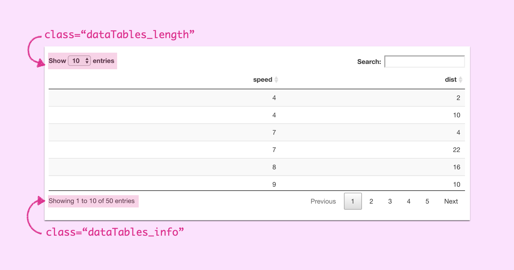

library(shiny)
ui <- fluidPage(
DT::dataTableOutput("table")
)
server <- function(input, output, session) {
output$table <- DT::renderDataTable(
data.frame(cars),
rownames = FALSE,
# I want to scroll the y-axis
# so the table is always the same height
options = list(
scrollY = '50vh'
)
)
}
shinyApp(ui, server)As a Shiny web developer it’s really common to leverage existing packages to create your HTML. But what if a package gets you 90% of where you want to go, and you want to customize it a little?
In this tutorial I give a default DT table a small makeover by combining the datatable’s dataTables_length element and the datatables `dataTables_info element. How did I find the names of these elements? The inspector!

My goal is to combine these into a single element at the bottom of the table:

The Plan
Given the following Shiny app:
We need to:
- Store the select within
dataTables_lengthas an object - Create a new HTML element,
new_bottomthat we will use for our revampeddataTables_info - Add the preamble text
Showing - Append the select dropdown from
dataTables_lengthto the new element - Add the total number of rows information in R
- Add the suffix text
entries - Replace
dataTables_infowith our new element - Give the new element the
dataTables_infoclass for styling - Remove the
dataTables_lengthnode from the DOM
Implementation
My general workflow for applying JS to Shiny apps is to run the application and then actually do my manipulation in the browser’s console.
Step 1
Using jQuery I stored the select dropdown to the object dropdown by finding the element of class dataTables_length, and then finding the select element inside it
const dropdown = $('.dataTables_length')
.find('label')
.find('select')Step 2 & 3
Next I created a new DOM element, added the class custom_dropdown to make selecting the node easier, and added the prefix text Showing
let new_bottom = document.createElement('div')
new_bottom.classList.add('custom_dropdown')
new_bottom.innerHTML = 'Showing 'Step 4
Using jQuery’s append function, we can add the isolated select to our new DOM element:
dropdown.appendTo(new_bottom)Step 5 & 6
And because we’re writing JS as a string in R we can interpolate the nrows number to use in the suffix text of 50 entries
new_bottom.append(' of ' +", nrow(cars), " + ' entries')Step 7
Now we can replace the existing element with our new custom one!
$('.dataTables_info').replaceWith(new_bottom)Step 8
We can remove the custom class we added, and give it the class dataTables_info so that the same styling of the old element is applied to our new one.
$('.custom_dropdown')
.removeClass('custom_dropdown')
.addClass('dataTables_info') Step 9
And now we can remove the dataTables_length element from the DOM!
$('.dataTables_length').remove()Putting it All Together
The DT function renderDataTable function has a callback argument, a function that is run once the table is rendered. We can apply our JS here as a string:
library(shiny)
ui <- fluidPage(
DT::dataTableOutput("table")
)
server <- function(input, output, session) {
output$table <- DT::renderDataTable(
data.frame(cars),
rownames = FALSE,
options = list(
scrollY = '50vh'
),
callback = DT::JS(paste0("
const dropdown = $('.dataTables_length')
.find('label')
.find('select')
let new_bottom = document.createElement('div')
new_bottom.classList.add('custom_dropdown')
new_bottom.innerHTML = 'Showing '
dropdown.appendTo(new_bottom)
new_bottom.append(' of ' +", nrow(cars), " + ' entries')
$('.dataTables_info')
.replaceWith(new_bottom)
$('.custom_dropdown')
.removeClass('custom_dropdown')
.addClass('dataTables_info')
$('.dataTables_length').remove()"))
)
}
shinyApp(ui, server)Et Viola! It’s a small UI fix that makes a world of difference!
I leverage jQuery here a LOT because Shiny is already loading the library, but vanilla JS can do all of this now. I’m hoping to refactor this code to get more familiar with vanilla JS DOM manipulation: stay tuned for more!